Several interesting control system design and analysis problems can be reduced to quantifier elimination (QE) problems as shown in [3],[7],[1],[11],[12]. The first attempt by Anderson et al.[3] was made in 1970's, but at that time the algorithm of QE was very intricate and no appropriate software was available. However, recently some improved algorithms have been developed by several authors (see [5],[6],[19]) and implemented on computers (see [10],[15],[16]). By virtue of the considerable developments of both algorithms and software in QE methods, we explore the application of the QE theory to control problems of great practical interest.
Many control problems and design specifications are described by using matrix inequalities. Here we focus on LMI and BMI problems; When
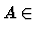
R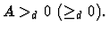
_d 0 \ ( \geq_d 0).$"> A linear matrix inequality (LMI) is a matrix inequality of the form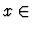
Rm is the variable vector and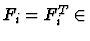
R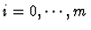
. And a bilinear matrix inequality (BMI) is of the form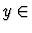
Rny,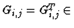
R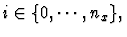
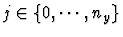
.
A number of important problems
can be are reduced to the optimization problems with LMI or BMI constraints.
The problem of minimizing a linear objective function in
Rm
subject to LMI constraint,
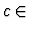
Rm, is called semidefinite programming (SDP). SDP problem is solved numerically as convex optimization problems (see [4],[20]). But when we consider the real parametric uncertainties the problems are not always convex (often become non-convex) and most of such methods does not work.
Moreover, we also consider extended SDP (ESDP) i.e.
the extension of the SDP obtained by replacing
LMI constraint by BMI
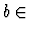
Rny. Though BMIs includes much wider variety of control problems than LMIs, BMI problems are non-convex and, in general, hard to find the solution numerically.